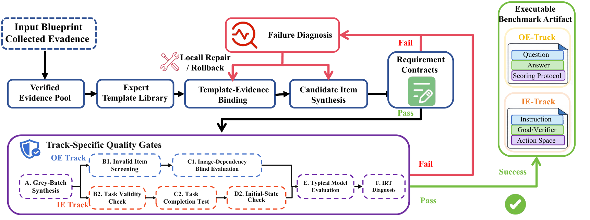

Embodied-BenchForge:
A Closed-Loop Agentic Workflow for
Embodied Benchmark Construction
1QiYuan Lab2University of Electronic Science and Technology of China
3Beijing University of Posts and Telecommunications4Northeastern University
5Beihang University6Tsinghua University† Corresponding author
Abstract
Building embodied benchmarks requires consistent observations, evidence, questions, reference answers, task specifications, and executable verifiers. Errors in intermediate artifacts can propagate through construction and compromise the resulting evaluation. We present Embodied-BenchForge, an agentic framework that transforms user-specified evaluation intents into complete embodied benchmark artifacts. The framework combines forward artifact synthesis with backward verification and repair. Typed, reusable skills compose the construction workflow, artifact-specific requirement contracts check intermediate outputs, and recorded provenance guides local re-execution or upstream rollback when verification fails. Using this framework, we construct six benchmarks in the Offline EQA Track and an Interactive Embodied Track containing 220 executable tasks. The two tracks evaluate observation-based understanding and closed-loop task execution. Artifact-quality assessment, construction-cost analysis, component ablations, and model evaluations examine the resulting benchmarks and the roles of verification and repair.
Method Overview
Benchmark construction is organized around dependent artifacts, each with explicit requirements and recorded provenance.
Skill-orchestrated synthesis. Typed, reusable skills connect intent blueprinting, data collection, evidence and state structuring, benchmark synthesis, and evaluation reporting. Inputs and outputs remain traceable throughout the workflow.
Artifact-specific verification. Requirements check structure, grounding, semantics, or execution according to the artifact type. For example, an answer must follow from the model-visible evidence, while an interactive instruction must agree with its goal and terminal verifier.
Provenance-guided repair. A failed requirement is traced to the affected construction dependencies. The workflow can correct a field, re-execute a skill, or roll back to an upstream artifact, then reconstruct and revalidate the affected descendants.

Generated Benchmark Examples
The Offline EQA Track contains 60,000 questions across six embodied settings, with 10,000 items per setting.
Browse 33 selected examples with their source images, original questions, and reference answers.
Verification and repair case studies
Interactive Embodied Tasks
Executable task specifications include an initial state, an instruction, an action space, and a terminal verifier.
Recorded trajectories support a separate assessment of trajectory-grounded question answering.
JSON downloads contain selected task fields and recorded trajectory checkpoints.
Example of instruction–goal consistency repair
For Kitchen26-00-hot-meal, the visible instruction and the executable PDDL goal initially assign four objects to different destinations. Repair aligns the task specification and recompiles the verifier; old reference trajectories and evaluation records are invalidated.
Construction Results
Verification and repair are evaluated through system-level and process-level ablations.
System-level ablation
Average across the six Offline EQA benchmarks
| Setting | Human quality | Valid rate |
|---|---|---|
| Full system | 91.28 | 93.7% |
| w/o verification & repair | 68.03 | 62.4% |
| w/o source grounding | 72.12 | 73.6% |
| w/o evidence skill | 74.08 | 80.8% |
Selected rows from Table 7. Valid rate measures candidates satisfying all mandatory requirements before release.
Provenance-guided repair
SpatialUAV, with the same request for 1,000 items
| Setting | Tokens | Valid rate |
|---|---|---|
| Full process | 2.62M | 93.7% |
| w/o provenance-guided repair | 3.93M | 91.8% |
Selected rows from Table 8. Tokens include synthesis, verification, diagnosis, and repair; the comparison fixes the request size.
See the paper for the full experimental protocols and results.
Resources
BibTeX
@article{jiang2026embodiedbenchforge,
title={Embodied-BenchForge: A Closed-Loop Agentic Workflow
for Embodied Benchmark Construction},
author={Jiang, Baoyang and Zhang, Fengchun and Wang, Leyuan
and Li, Haotian and Wang, Yida and Ji, Zhe
and Lai, Jinshan and Ren, Xi and Li, Danyang
and Yang, Zheng and Hu, Jianwei and Ma, Qiang},
journal={arXiv preprint arXiv:2609.13082},
year={2026}
}